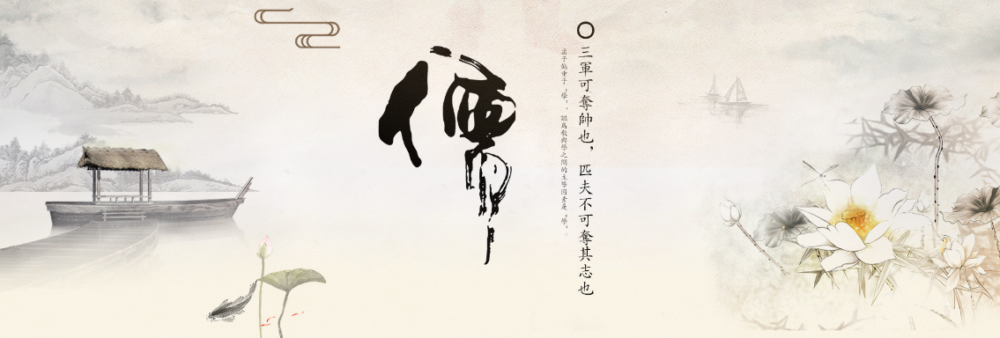

养生文化
就有文字记载的历史确切性而言，中国养生文化的萌芽大概只能上溯到殷商时代。从已经出土的甲骨文的考证中可以发现，殷商时的人们在生病、分娩时都祈祷祖宗神灵佑助；对日常生活中的吉凶祸福与健康状况也不时卜问，进而举行各种形式的祭祀活动以清除不祥。此外，甲骨文中还出现了有关个人卫生（如沐、浴）和集体卫生（如大扫除称“寇帚”）之类的记载。
就有文字记载的历史确切性而言，中国养生文化的萌芽大概只能上溯到殷商时代。从已经出土的甲骨文的考证中可以发现，殷商时的人们在生病、分娩时都祈祷祖宗神灵佑助；对日常生活中的吉凶祸福与健康状况也不时卜问，进而举行各种形式的祭祀活动以清除不祥。此外，甲骨文中还出现了有关个人卫生（如沐、浴）和集体卫生（如大扫除称“寇帚”）之类的记载。
中医最大的优点，就在于非常注重人体的自我修复力，几千年前《黄帝内经》中就倡导养生防病，提倡医生"治未病"。有病先调理，优先使用副作用小的针灸、砭石、按摩等治疗方法。实在不行，再用少量药物辅助治疗。其实医疗的目的并不是纠正人体的错误、中止病痛症状，而是协助人体完成它应有的功能。比如呼吸系统的抵抗力降低就会感冒，所以有经验的中医通常不会过多给患者开药打针，降温止咳，而是叮嘱病人多喝水，多休息，禁食大鱼大肉等肥甘厚味，多吃富含维生素的水果和蔬菜。这样就避免加重肠胃的负担，给身体一个修复的机会，从而促进机体自愈系统的恢复，感冒也就不治自愈了。
逮至西周，养生思想进一步发展。周代还设有食医专门掌管周王与贵族阶层的饮食，指导“六饮、六膳、百馐、百酱”等多方面的饮食调理工作，提出饮食调理要与四季气候相适应；并有了专职主管环境卫生的职官，如“庶氏掌除毒蛊”；“翦氏掌除蠹物……以莽草薰之”；“壶涿氏掌除水虫”，使水清洁。
中国养生文化史上第一个黄金时代的到来首推春秋战国。当时的史书对养生的记载已经十分具体，例如《左传》就记载了秦国医和为晋侯治病，指出晋侯之疾是“近女室。疾如蛊”的结果，已经注意到了房室起居与健康的关系。在先秦诸子学说中，影响最大的莫过于儒、法、道、墨四家，而在养生问题上贡献最大的又属其中的儒、道两家。